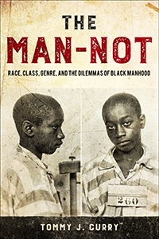

<body bgcolor="#FFFFFF" text="#000000" link="#0000FF" vlink="#CC0000" alink="#CC0000"><center><hr width="350" size="1" align="center" noshade>Introduces the conceptual foundations for Black Male Studies, going beyond gender theories that cast the Black Male as a pathological aspiring patriarch<hr width="350" size="1" align="center" noshade><p><a href="https://cdcshoppingcart.uchicago.edu/Cart/ChicagoBook.aspx?ISBN=&&PRESS=temple" target="_top">Buy this book!</a> | <a href="https://cdcshoppingcart.uchicago.edu/Cart/Cart.aspx?PRESS=temple" target="_top">View Cart</a> | <a href="https://cdcshoppingcart.uchicago.edu/Cart/Cart.aspx?PRESS=temple" target="_top">Check Out</a></p><p></p></center><!--none//--><h1 class = "booktitle">The Man-Not</h1> <h1 class = "subtitle">Race, Class, Genre, and the Dilemmas of Black Manhood</h1>
<h3>Tommy J. Curry</h3>
paper: $34.95, Jul 17<BR>EAN:&nbsp;978-1-4399-1486-1<BR><font color=#990033>Not Yet Published Preorder</FONT><font size=-7><br>&nbsp;</font></p><p class="info">cloth: $99.50, <BR>EAN:&nbsp;978-1-4399-1485-4<BR><font color=#990033>Not Yet Published Preorder</FONT><font size=-7><br>&nbsp;</font></p><p class="info">e-book: $34.95, <BR>EAN:&nbsp;978-1-4399-1487-8<BR><font color=#990033>Not Yet Published Preorder</FONT><font size=-7><br>&nbsp;</font></p></p></td></tr></table>
<BR> <p class="info">306 pp<BR> 6 x 9<BR> <p class="info"><font size=-7>&nbsp;</font></p><p class="info">
</P><BLOCKQUOTE></BLOCKQUOTE>
<p>
Tommy J. Curry's provocative book <i>The Man-Not </i>is a justification for Black Male Studies. He posits that we should conceptualize the Black male as a victim, oppressed by his sex. <i>The Man-Not, </i>therefore,<i> </i>is a corrective of sorts, offering a concept of Black males that could challenge the existing accounts of Black men and boys desiring the power of white men who oppress them that has been proliferated throughout academic research across disciplines.<br>
<p>Curry argues that Black men struggle with death and suicide, as well as abuse and rape, and their <i>genred </i>existence deserves study and theorization. This book offers intellectual, historical, sociological, and psychological evidence that the analysis of patriarchy offered by mainstream feminism (including Black feminism) does not yet fully understand the role that homoeroticism, sexual violence, and vulnerability play in the deaths and lives of Black males. Curry challenges how we think of and perceive the conditions that actually affect all Black males.
<br>
<P CLASS="top"><A HREF="#top">BACK TO TOP</A></P>&nbsp;
<BR>&nbsp;
&nbsp;<P>
</P><BR>&nbsp;
<H2 class="inpageheading"><A NAME="author bio"></a>About the Author(s)</H2><p>
<b>Tommy J. Curry</b>&nbsp;is an Associate Professor of Philosophy and Africana Studies at Texas A&M University, where he holds the prestigious Ray A. Rothrock Fellowship (2013-2016). He serves as Executive Director of Philosophy Born of Struggle and is the&nbsp;recipient of the USC Shoah Foundation 2016-2017 A.I. and Manet Schepps Foundation Teaching Fellowship. He is the author of&nbsp;<i>The Philosophical Treatise of William H. Ferris: Selected Readings from </i>The African Abroad or, His Evolution in Western Civilization.
<br>
<P CLASS="top"><A HREF="#top">BACK TO TOP</A></P>
<p><h2 class="inpageheading"><A NAME="subjects"></a>Subject Categories</h2><P><A HREF="/tempress/african.html" TARGET="_top">African American Studies</a><BR><P><A HREF="/tempress/gender.html" TARGET="_top">Gender Studies</a><BR><P><A HREF="/tempress/philosophy.html" TARGET="_top">Philosophy and Ethics</a></P></P>
</p>
<P>
</P>
<p align="center"><a href="https://cdcshoppingcart.uchicago.edu/Cart/ChicagoBook.aspx?ISBN=&&PRESS=temple" target="_top">Buy this book!</a> | <a href="https://cdcshoppingcart.uchicago.edu/Cart/Cart.aspx?PRESS=temple" target="_top">View Cart</a> | <a href="https://cdcshoppingcart.uchicago.edu/Cart/Cart.aspx?PRESS=temple" target="_top">Check Out</a></p><p><font face="Arial" size="1"><a href="copyright.html" onMouseOver="window.status='Web Copyright Policy';return true;" onMouseOut="window.status=''" title="Web Copyright Policy">&copy;</a> 2017 <a href="http://www.temple.edu" target="new" onMouseOver="window.status='Link to Temple University home page';return true;" onMouseOut="window.status=''" title="Link to Temple University home page">Temple University</a>. All Rights Reserved. http://www.temple.edu/tempress/titles/2453_reg.html</font></p>